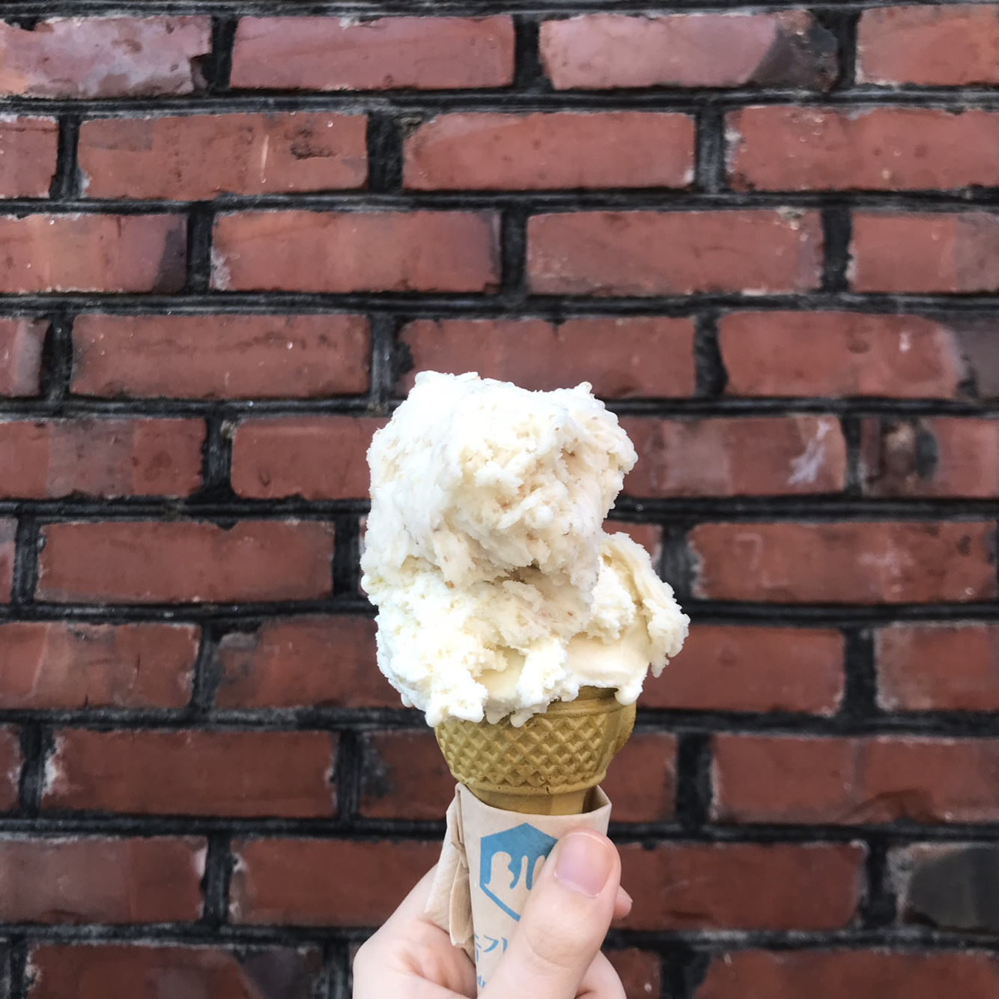
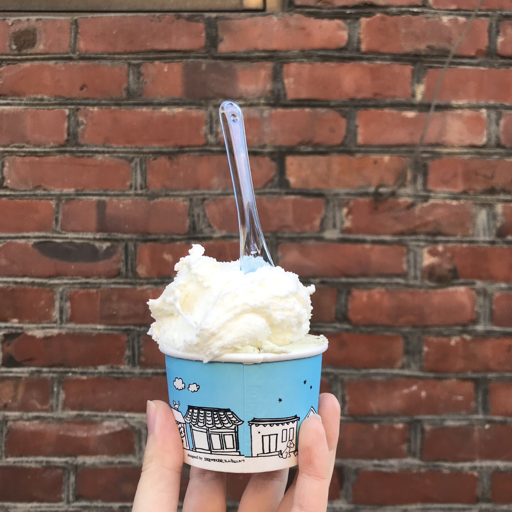
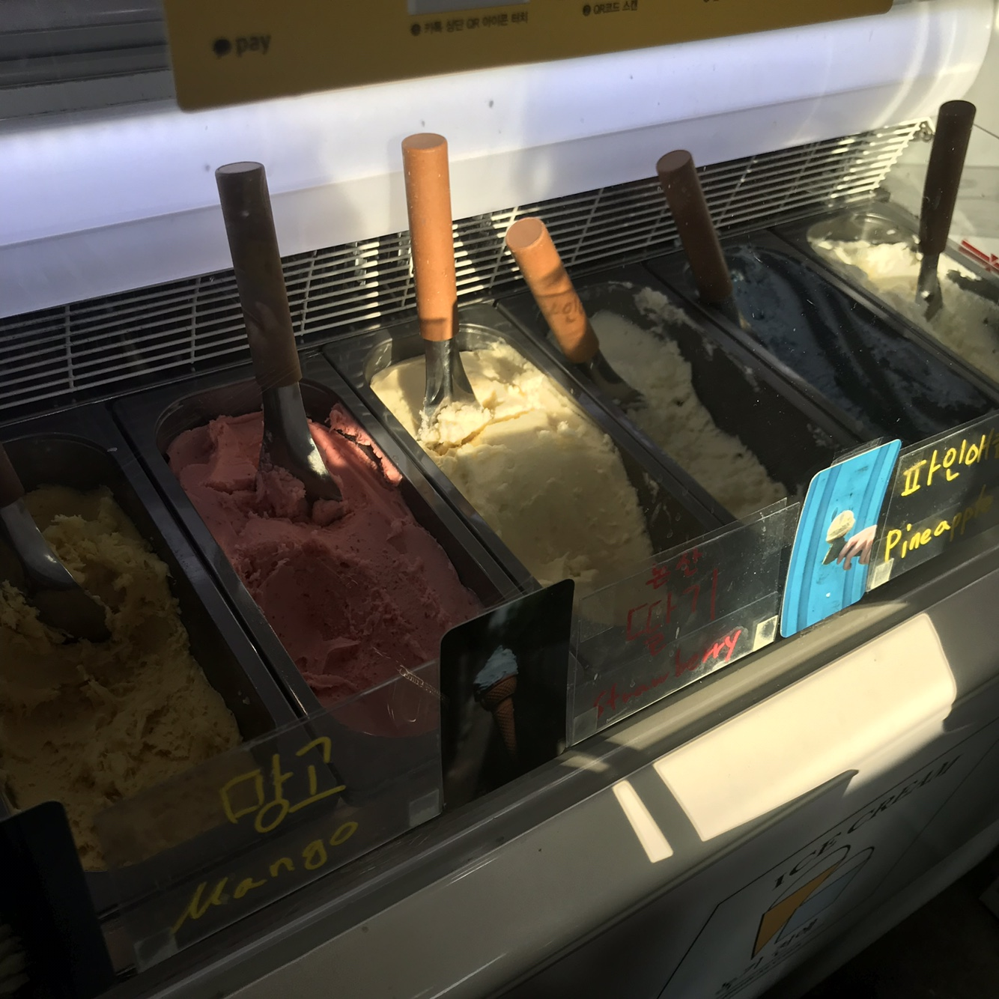
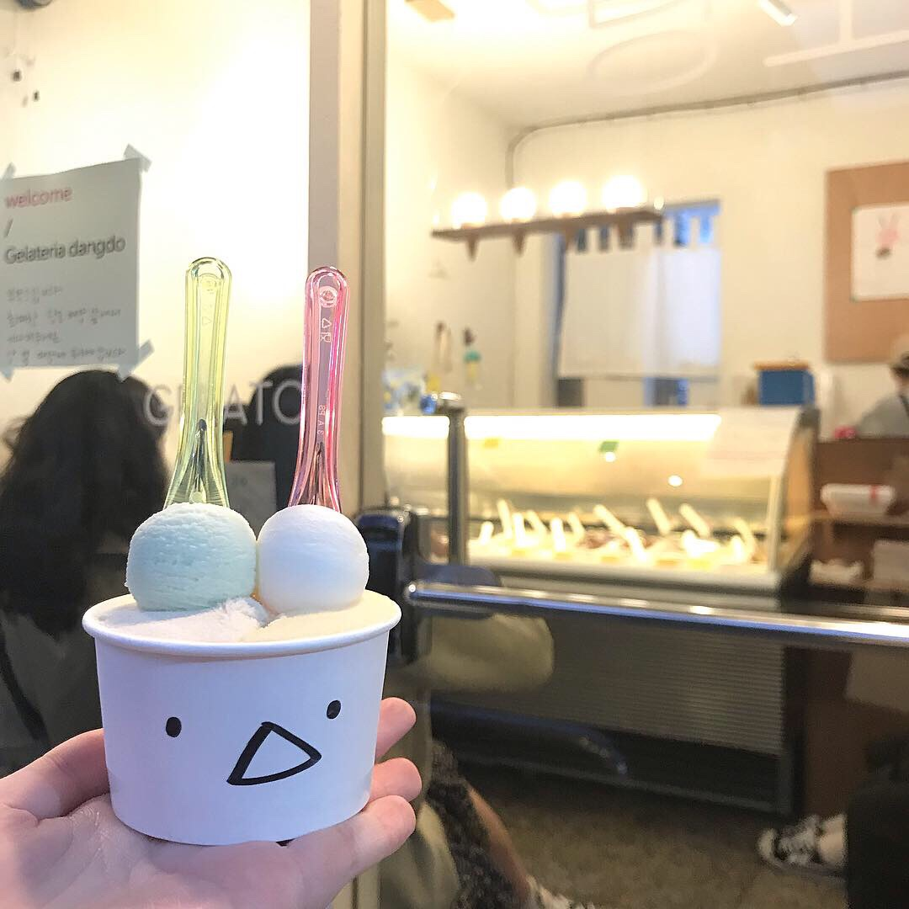

젤라또
젤라또는 이탈리아의 전통 아이스크림이다.
젤라또는 라틴어의 '얼어붙은, 결빙된'이라는 뜻의 'gelatus'에서 파생되었다.
젤라또가 일반 아이스크림과 구분되는 차이점은 아이스크림에 비해 지방은 적으며 당분은 높다는 점이다.
뿐만 아니라 다른 병과류 디저트에 비해 묵직한 질감과 깊은 맛을 내기도 하는데, 이는 타 빙과류에 비해 적은 공기 함유량과 풍부한 향미 덕분이다.
| 젤라또 | 아이스크림 | |
|---|---|---|
| 유지방 함유량 | 4~8% | 14%이상 |
| 당분 함유량 | 16~22% | 21% |
젤라또 맛집
<익선동 - 녹기전에>
 카이스트를 졸업한 사장님이 철저한 수학적 계산으로 만들어낸 젤라또.
날마다 메뉴는 바뀌며 인스타그램 계정으로 항상 메뉴를 알리신다.
손님을 친구처럼 친근하게 대해주시며 대화하다보면 사장님만의 아이스크림에 대한 철학을 느낄 수 있다.
이 철학은 간간이 인스타그램 계정엗 담기니 한 번 읽어보면 좋을 것 같다.
젤라또의 질감은 왼쪽 사진에서 느껴지는 바와 같이 녹진하다. 입자 하나하나가 엉겨붙어 있는 느낌이다.
재료 본연의 맛이 뚜렷하고, 입안에서 쫀득하게 녹아내린다.
<망원동 - 당도>
망원 시장 근처에 위치한 망원동의 젤라또 가게.
문을 열고 들어가면 한 부부가 '어서오세요!'하고 크게 외쳐주신다. 그렇기 때문에 기분이 괜히 좋아진다.
당도의 젤라또 질감은 곱고 부드러운 느낌이다. 맛이 강하지 않고 조화롭다.
그리고 가게를 나갈 때 '감사합니다!'하고 크게 외치셔서 괜히 놀라게 된다.
가보면 왜 손님이 끊이지 않고 오는지 알 수 있다.
젤라또 맛집 지도
<녹기 전에 - 익선동>
<당도 - 망원동>